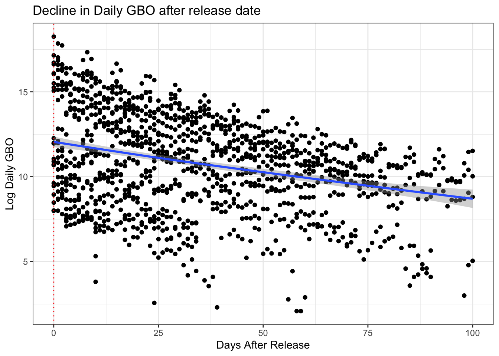
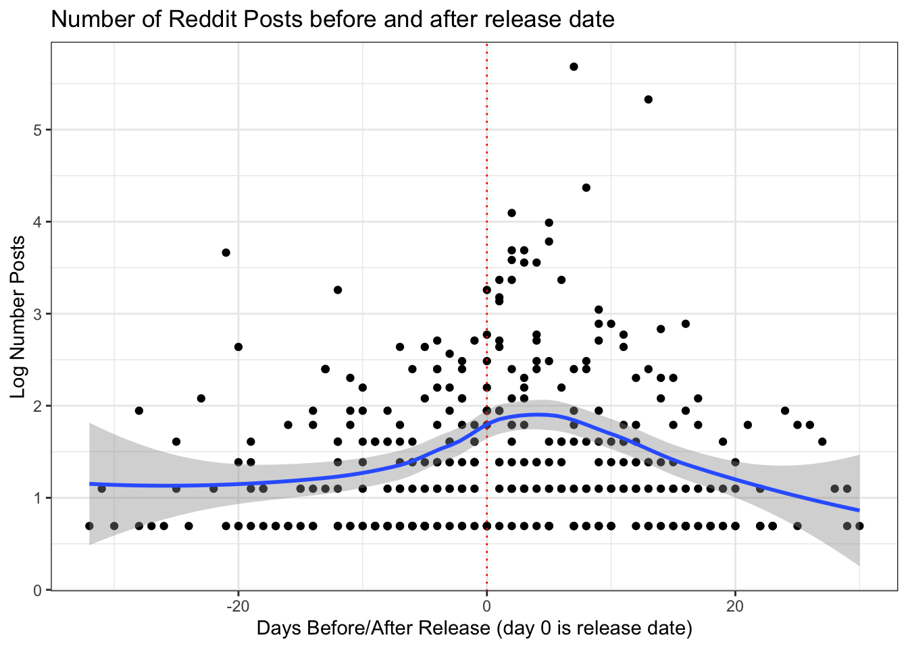
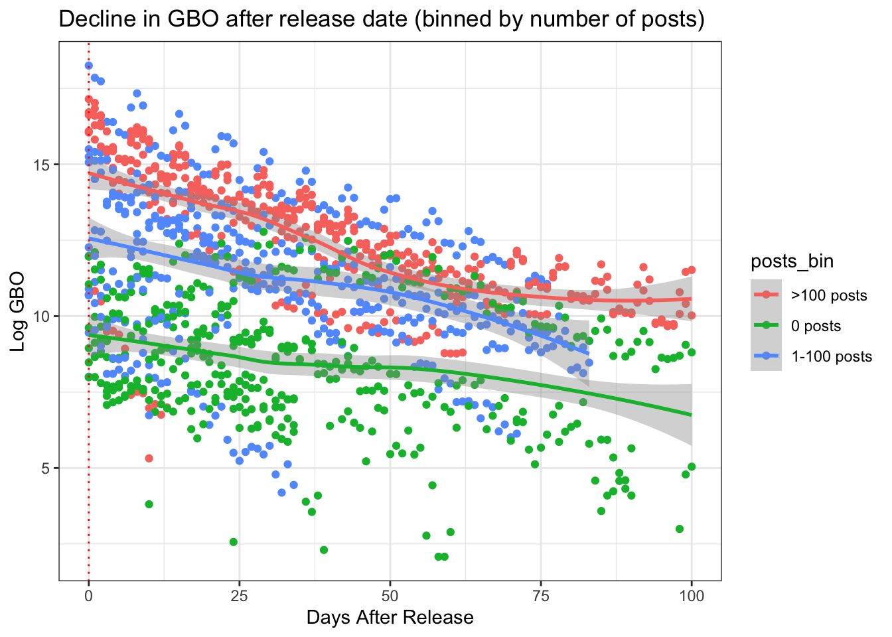
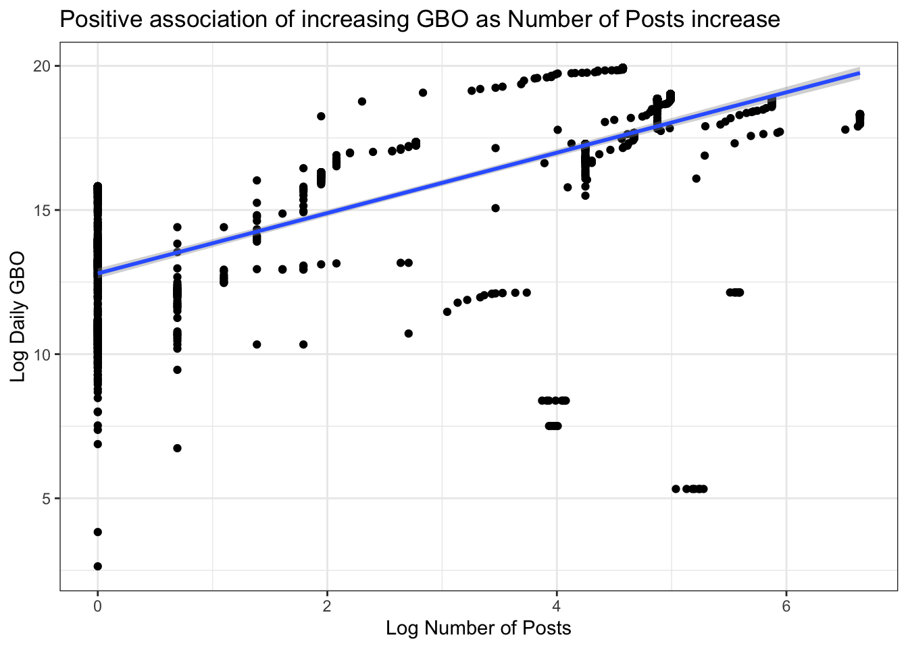

library(dplyr)
library(ggplot2)
library(tidyr)
posts_df <- read.csv("./data/movies_may_2015_posts.csv", stringsAsFactors = FALSE)
gbo_df <- read.csv("./data/movies_may_2015_gbo.csv", stringsAsFactors = FALSE)#fix date
posts_df <- posts_df %>%
mutate(date_post = as.Date(created_date, "%Y-%m-%d"))
gbo_df <- gbo_df %>%
mutate(gbo_date = as.Date(date, "%m/%d/%y"),
release_date = as.Date(release_date, "%m/%d/%y"))# outer join posts and gbo on movie name and date. each row => movie_name, date, gbo on that day, number of posts on that day
gbo_post_df <- posts_df %>%
group_by(movie_name, date_post) %>%
count() %>% #count number of posts per movie on date
ungroup() %>%
full_join(select(gbo_df, gbo_date, movie_name, Daily), by = c("movie_name" = "movie_name", "date_post" = "gbo_date"))
names(gbo_post_df) <- c("movie_name", "date", "num_posts", "Daily")
# covert gbo from char to num
gbo_post_df <- gbo_post_df %>% mutate(gbo_daily = as.numeric(gsub("[$,]","",Daily)))
gbo_post_df <- select(gbo_post_df, -Daily)
# calculate days from / to release date, and log values
gbo_post_df <- inner_join(gbo_post_df, select(gbo_df, movie_name, release_date) %>% distinct(), by = c("movie_name")) %>%
mutate(daysFromToRelease = date - release_date) %>%
mutate(daysFromToRelease = as.integer(daysFromToRelease),
log_gbo_daily = log(gbo_daily),
log_num_posts = log(num_posts+1))
# pivot long
gbo_post_df_long <- pivot_longer(gbo_post_df, cols = c("num_posts","gbo_daily","log_num_posts","log_gbo_daily"), names_to = "series")gbo_post_df_long %>%
filter(release_date >= "2015-05-01") %>%
filter(series == "log_gbo_daily" & daysFromToRelease <=100) %>%
na.omit() %>%
ggplot(aes(x = daysFromToRelease, y = value)) +
geom_point() +
geom_smooth() +
theme_bw() +
labs(title = "Decline in Daily GBO after release date", x = "Days After Release", y = "Log Daily GBO") +
geom_vline(xintercept = 0, linetype="dotted",
color = "red", size=0.5) +
scale_x_continuous(limits = c(0,100))## `geom_smooth()` using method = 'gam' and formula 'y ~ s(x, bs = "cs")'
gbo_post_df_long %>%
filter(release_date >= "2015-05-01") %>%
filter(series == "log_num_posts" & daysFromToRelease <=100) %>%
na.omit() %>%
ggplot(aes(x = daysFromToRelease, y = value)) +
geom_point() +
geom_smooth() +
geom_vline(xintercept = 0, linetype="dotted",
color = "red", size=0.5) +
theme_bw() +
labs(title = "Number of Reddit Posts before and after release date", x = "Days Before/After Release (day 0 is release date)", y = "Log Number Posts") ## `geom_smooth()` using method = 'loess' and formula 'y ~ x'
# bin movies on num posts
total_movie_posts <- gbo_post_df_long %>%
filter(release_date >= "2015-05-01") %>%
filter(series == "num_posts" & daysFromToRelease <=100) %>%
group_by(movie_name) %>%
summarise(sum_posts = sum(value, na.rm = TRUE))
total_movie_posts$posts_bin <- ifelse(total_movie_posts$sum_posts > 100, ">100 posts",
ifelse(total_movie_posts$sum_posts >= 1, "1-100 posts", "0 posts"))
# visualize
gbo_post_df_long %>%
filter(release_date >= "2015-05-01") %>%
filter(series == "log_gbo_daily" & daysFromToRelease <=100) %>%
inner_join(total_movie_posts, by = c("movie_name")) %>%
na.omit() %>%
ggplot(aes(x = daysFromToRelease, y = value, col = posts_bin)) +
geom_point() +
geom_smooth() +
theme_bw() +
labs(title = "Decline in GBO after release date (binned by number of posts)", x = "Days After Release", y = "Log GBO") +
geom_vline(xintercept = 0, linetype="dotted",
color = "red", size=0.5) +
scale_x_continuous(limits = c(0,100))## `geom_smooth()` using method = 'loess' and formula 'y ~ x'
# Rolling gbo and posts: each row => each day and movie, gbo made till that day, number of posts till that day
gbo_post_df_na_zero <- gbo_post_df %>% mutate(gbo_daily = ifelse(is.na(gbo_daily), 0, gbo_daily),
num_posts = ifelse(is.na(num_posts), 0, num_posts))
gbo_post_df_na_zero_cumsum <- gbo_post_df_na_zero %>%
arrange(movie_name, date) %>%
group_by(movie_name) %>%
mutate(gbo_daily_sum = cumsum(gbo_daily),
num_posts_sum = cumsum(num_posts)) %>%
ungroup() %>%
mutate(daysFromToRelease = as.integer(daysFromToRelease),
log_gbo_daily_sum = log(gbo_daily_sum+1),
log_num_posts_sum = log(num_posts_sum+1))
gbo_post_df_na_zero_cumsum %>%
filter(release_date >= "2015-05-01" & log_gbo_daily_sum > 0) %>%
ggplot(aes(x = log_num_posts_sum, y = log_gbo_daily_sum)) +
geom_point() +
geom_smooth(method = "lm") +
theme_bw() +
labs(title = "Positive association of increasing GBO as Number of Posts increase", x = "Log Number of Posts", y = "Log Daily GBO")
#num of movies: 34
gbo_post_df_na_zero_cumsum %>%
filter(release_date >= "2015-05-01" & log_gbo_daily_sum > 0) %>% distinct(movie_name)## # A tibble: 34 x 1
## movie_name
## <chr>
## 1 5 Flights Up
## 2 Aloha
## 3 Animals
## 4 Avengers: Age of Ultron
## 5 Chocolate City
## 6 Dark Star: HR Gigers Welt
## 7 Entourage
## 8 Far from the Madding Crowd
## 9 Gerontophilia
## 10 Heaven Knows What
## # … with 24 more rowsreg_data2 <- gbo_post_df_na_zero_cumsum %>%
filter(release_date >= "2015-05-01" & log_gbo_daily_sum > 0)
summary(lm(log_gbo_daily_sum ~ log_num_posts_sum, data = reg_data2))##
## Call:
## lm(formula = log_gbo_daily_sum ~ log_num_posts_sum, data = reg_data2)
##
## Residuals:
## Min 1Q Median 3Q Max
## -13.0033 -0.8433 0.2341 1.0905 3.5537
##
## Coefficients:
## Estimate Std. Error t value Pr(>|t|)
## (Intercept) 12.79893 0.08906 143.71 <2e-16 ***
## log_num_posts_sum 1.04723 0.02450 42.75 <2e-16 ***
## ---
## Signif. codes: 0 '***' 0.001 '**' 0.01 '*' 0.05 '.' 0.1 ' ' 1
##
## Residual standard error: 2.121 on 1369 degrees of freedom
## Multiple R-squared: 0.5717, Adjusted R-squared: 0.5714
## F-statistic: 1827 on 1 and 1369 DF, p-value: < 2.2e-16